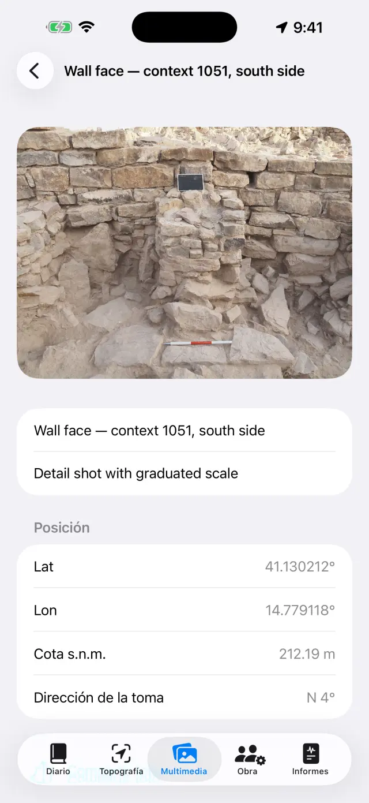
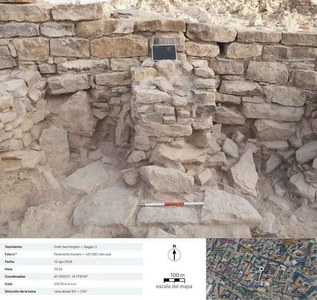

El diario de excavación digital para iPhone y iPad. 100 % sin conexión: tus datos se quedan en el dispositivo.
En dos palabras
Todo gira en torno a una idea: cada jornada de excavación es una
página que se rellena sola. Tú registras las cosas donde corresponde —
un punto GNSS en Topografía, una foto en Multimedia, las horas en la Obra — y
la página del día en el Diario lo recoge todo automáticamente. Al
final de la semana o de la excavación, los informes se generan solos a partir
de las páginas.
Una jornada típica
MañanaAbre la página del día, anota el tiempo y el diario (o dictalo con Dictar)
EquipoEn la Obra, registra quién está y sus horas
TopografíaCaptura puntos GNSS; comprueba una base antes si usas RTK
FotosDispara desde Multimedia: las coordenadas se añaden solas
DibujosCalca la sección o la planta sobre una foto (papel vegetal digital)
TardeDesde Informes, genera el diario: un PDF listo para enviar
Primeros pasos
Al abrir la app por primera vez encontrarás un yacimiento de ejemplo. Para
crear el tuyo, toca el nombre del yacimiento arriba (icono 🗺) →
Nuevo yacimiento… y ponle nombre (p. ej. «Colle Sant'Angelo —
Sondeo 3»).
El nombre del yacimiento activo está siempre visible arriba: todas las
pestañas muestran sus datos. Para cambiar de yacimiento, vuelve a tocar el
nombre: la lista está bajo el título «Tus yacimientos», y con
Renombrar yacimiento… corriges un nombre sin perder nada.
Concede los permisos cuando se pidan: ubicación (para los puntos),
cámara (para las fotos), micrófono (para el dictado),
Bluetooth (solo si usas un receptor externo).
Las cinco pestañas
📓 Diario
Toca una jornada para abrir su página: diario, tiempo, equipo, puntos,
fotos y dibujos del día ya están allí.
Escribe el diario o toca Dictar y habla: la transcripción se
hace en el dispositivo y funciona sin red.
El meteo se escribe a mano (p. ej. «Despejado, 28 °C, viento flojo») o se
obtiene con Obtener, que pide las condiciones del momento al servicio
meteorológico noruego. Hace falta red y solo funciona en el día de hoy: el
tiempo de ayer ya no se puede recuperar. Un segundo toque por la tarde añade
otra medida. Lo que escribes a mano siempre gana.
Al obtenerlo, del dispositivo solo sale la posición de la zona redondeada a
unos 11 metros, y en los informes la línea aparece en el idioma del informe.
La lista de jornadasLa página de una jornada
📍 Topografía
El panel superior muestra la posición en vivo: coordenadas, cotas,
precisión y tipo de fix (GPS / RTK Float / RTK Fix).
Si usas jalón, ajusta la Altura de antena (m): la cota del punto
se reduce al suelo automáticamente.
Toca Capturar punto. Los nombres son correlativos (P001,
P002…), pero puedes escribir el tuyo (p. ej. «UE 102 — fondo de fosa») y
añadir una nota.
Cambia entre Lista y Mapa para ver los puntos sobre
el terreno; desde el mapa puedes activar el catastro u otro servicio WMS.
Las bases de replanteo (🏁) tienen su propia sección: impórtalas de CSV o
créalas, y abre la Comprobación en vivo para vigilar los residuos
ΔN/ΔE/ΔZ con la punta sobre el clavo, antes de empezar a medir.
Bajo Libretas de nivelación está la libreta de campo del nivel
óptico: estaciones, lecturas atrás y adelante, cotas calculadas desde una
base de partida, con el control del error de cierre. Los puntos nivelados
entran en el yacimiento con su cota, igual que los GNSS.
Bajo el panel están las Grabaciones NMEA: el flujo bruto del
receptor externo PRO acaba en un archivo por sí solo
— la grabación arranca cuando enciendes la antena y se cierra cuando la apagas,
sin que tengas que acordarte. Sirve para releer una jornada dudosa o para
entregar el bruto a quien hace el posproceso. Los archivos se comparten y se
borran, salvo el de la grabación en curso; la lista se abre también con el
receptor apagado, así los archivos de ayer siguen al alcance.
El panel GNSS de TopografíaPuntos y bases en el mapa
Cada punto guarda las dos cotas: elipsoidal y
ortométrica (s. n. m.). Con el GPS interno del teléfono la cota ortométrica
puede no estar disponible: hace falta un receptor externo (ver más abajo).
📷 Multimedia
Dispara con el botón de cámara o importa del carrete.
Las fotos se numeran solas (F001, F002…) y se georreferencian con la última
posición GNSS disponible.
Al disparar, la app también registra la dirección de la
toma con la brújula: en el detalle de la foto y en los informes lees
«vista desde SO — 214°», y para las tomas en vertical (planta, fondo de una
UE) la indicación nadir con la dirección del borde superior. Si la brújula
está perturbada, la app lo indica.
Toca una foto para ponerle título y notas (p. ej. «UE 102 desde el
norte»).
Compartir fichaPRO genera la
ficha fotográfica de documentación: la foto con los datos de
la toma debajo (yacimiento, número, fecha y hora, coordenadas, cota,
dirección), una vista satélite con el marcador y el cono de toma, la barra de
escala del mapa y la flecha del norte. El mapa necesita red: sin ella, la
ficha sale igualmente, con el panel de datos ampliado.
La galería de fotos

El detalle de una foto: coordenadas, cota y dirección de la toma

La ficha exportada: los datos de la toma, la vista satélite con el cono de toma, la barra de escala del mapa y la flecha del norte
✏️ Dibujos (en Multimedia)
Crea una lámina nueva y elige una foto del yacimiento como fondo: es tu
papel vegetal digital. Un dibujo puede continuar en varias jornadas. También
puedes no ponerla, la foto: sobre el papel vegetal en blanco se dibuja
igual.
Calca estratos, cortes y piedras con el dedo o el Apple Pencil.
Pellizca para hacer zoom (hasta 6×, doble toque con dos dedos
para volver a 1×). Si la foto te tapa el trazo, elige Opacidad del
fondo… en el menú de la cámara y llévala donde haga falta, del 5% al
100%: desvanece la foto, no el dibujo. La elección se queda en la lámina y vale
también en PDF, DOCX, PNG y en Exportar con leyenda.
Todo lo demás está bajo Herramientas (la llave inglesa de la
barra), que es el índice de los seis modos: Cuadro de texto,
CalcoPRO, Escala de la foto,
Punto con cota, Trama y Estilo de línea. Se
mantiene uno solo a la vez: la marca dice cuál, y mientras
está encendido el dedo no dibuja sino que gobierna esa herramienta — para
volver a dibujar, toca de nuevo la entrada marcada. Las tres entradas que
trabajan sobre la imagen (calco, escala, punto con cota) solo aparecen si hay
una foto de fondo.
Con Cuadro de texto pones las etiquetas (p. ej. «UE 1002»): se
mueven, se redimensionan con el pellizco y tienen cuatro tipos de letra entre
los que elegir.
El CalcoPRO reconoce el contorno del
objeto que tocas (una piedra, el límite de un estrato) y lo convierte en trazo:
el color, el grosor y el estilo de la línea se cambian sin salir del modo, y
los contornos salen lisos en vez de escalonados. Todo ocurre en el dispositivo,
sin red.
Dentro del calco, Calcar todoPRO
recorre él solo toda la foto. En la hoja de arranque decides el aspecto —
Solo contornos, o una trama y quizá un Velo de color — y
pulsas Iniciar: la barra dice por dónde va, y tarda algunas decenas
de segundos. Lo que aparece es una vista previa, no el dibujo:
un toque dentro de una forma la excluye, otro la recupera (entre formas
superpuestas gana la más pequeña bajo el dedo), Pasada fina repasa
solo donde no había encontrado nada, y Aplicar pone en el dibujo lo
que ha quedado. Mientras no apliques, la lámina no se toca.
Con la herramienta Escala de la foto (regla) tocas los dos
extremos de una medida conocida — un tramo del jalón — y escribes la distancia
real: la foto adquiere la escala, y desde ahí las exportaciones hablan en
metros.
Con Punto con cota pones sobre la foto la cruceta de un punto
GNSS del yacimiento (o un punto escrito a mano): nombre, cota y coordenadas
aparecen en una etiqueta arrastrable con línea de referencia. Pellizca sobre la
etiqueta seleccionada para achicarla o agrandarla, cuando los valores tapan el
dibujo.
La Trama rellena las formas: tocas dentro de
una forma cerrada y esa se rellena. Están las diez tramas de convención —
Mampostería / piedra, Ladrillo, Mortero /
revoque, Arcilla, Limo, Arena,
Grava, Carbón / ceniza, Roca natural,
Madera — y el Velo de color (un color con su opacidad),
solos o juntos. Si una forma está dentro de otra gana la más pequeña bajo el
dedo; Quitar relleno la limpia. No hace falta la foto: el relleno
trabaja sobre las formas dibujadas, así que funciona también sobre el papel
vegetal en blanco.
El Estilo de línea viste una línea ya
dibujada: la tocas y eliges entre Continua,
Discontinua, Punteada y Raya y punto,
ajustando el grosor. Dibujar con este estilo hace que los trazos
siguientes nazcan ya vestidos; Quitar estilo devuelve la línea
llena. No es un efecto de pantalla: las rayas son segmentos de verdad, y lo
siguen siendo en PDF, DOCX, PNG, SVG y DXF.
Exportar con leyendaPRO: la imagen
sale con una franja blanca debajo — barra de escala (si hay escala), flecha
del norte para las fotos tomadas en vertical, «vista desde» para las
frontales.
Exportar vectorialPRO: SVG para el
dibujo, o DXF para el SIG. Con al menos dos puntos con cota
y coordenadas sobre una foto tomada en vertical, el DXF sale
georreferenciado en UTM y en QGIS se coloca solo en el
mundo; con solo la escala sale en metros locales; sin ninguna de las dos
cosas, la app lo indica y no genera un archivo sin unidades. El SVG es la
excepción en cuanto a la opacidad: incorpora la foto original tal cual, así que
el fondo atenuado allí sale a plena fuerza.
Al terminar, oculta la foto: queda el dibujo limpio, listo para el
informe.
El papel vegetal digital
👷 Obra
Registra la asistencia del día: nombre, tarea y horas de cada persona.
Lleva el inventario del equipamiento y a quién está asignado.
Equipo y horas
📄 Informes
Elige el tipo: diario (gratis, con marca de agua),
semanal, mensual o final
con apéndices completos PRO.
Elige el idioma del informe entre diecisiete, independiente
del idioma de la app: el informe puede salir en alemán aunque uses la app en
español.
Genera el PDF, o exporta DOCX con logotipo y fotos
PRO, CSV de los puntos, GeoJSON para QGIS
PRO.
Con las fotos en los informes activadas, puedes elegir Fichas
fotográficas en lugar de las fotosPRO: cada
foto entra en el PDF y el DOCX como ficha de documentación completa con
datos y mapa, en el idioma del informe.
Generación de informes
Receptor GNSS externo y NTRIP
Con un receptor externo (antena centimétrica) la app alcanza precisión RTK.
El GPS interno queda siempre disponible como respaldo.
Enciende el receptor y activa el Bluetooth del teléfono.
En Topografía elige la fuente de posición: GNSS externo
(BLE/NMEA)PRO y selecciona tu receptor en la
lista. También se admiten receptores MFi (gratis) y receptores que emiten NMEA
por red.
Para las correcciones RTK configura el NTRIP: dirección
del caster, puerto, mountpoint, usuario y contraseña (se guardan en el llavero
del dispositivo). La app envía tu posición al caster y recibe las
correcciones.
Espera al RTK Fix: precisión centimétrica. Comprueba una
base antes de empezar.
Donde el teléfono no tiene cobertura existe también el camino
sin internet: una base plantada sobre un punto conocido y un
rover que se intercambian las correcciones por radio LoRa, sin
caster y sin SIM (kit RTK DFRobot con puente ESP32). Para la app no cambia
nada — recibe del receptor un NMEA ya corregido — y el montaje del puente está
documentado aparte, en su propio README: esta sigue siendo una guía de la app,
no un manual de firmware.
Copia de seguridad e intercambio
En el menú del yacimiento toca Exportar yacimiento (.zip):
dentro va todo — diario, puntos, fotos, dibujos, horas, bases.
Guarda el ZIP donde quieras (Archivos, Drive, correo…). Es tu copia de
seguridad: la app no tiene nube, por diseño.
Importar yacimiento (.zip)… recrea el yacimiento en otro
dispositivo, incluso entre iPhone y Android.
⚠️ Eliminar yacimiento… borra el yacimiento con todo
su contenido y es irreversible: si dudas, exporta antes un
ZIP.
Gratis y Pro
Gratis
Pro
Yacimientos
1
Ilimitados
GNSS
GPS interno, receptores MFi
+ BLE/NMEA, NTRIP
Informes
Diario con marca de agua
Todos, sin marca de agua
Exportación
PDF, CSV
+ DOCX con logotipo y fotos, GeoJSON
Dibujos
Papel vegetal, zoom, cuadros de texto, escala, puntos con cota, tramas, estilos de línea, opacidad del fondo
+ Exportar con leyenda, SVG/DXF
Calco automático
—
Al toque y «Calcar todo»
Grabaciones NMEA
Relectura y compartición de los archivos
La grabación (hace falta la antena externa)
Libretas de nivelación
✓
✓
Ficha fotográfica
—
Compartir y fichas en los informes
Dictado por voz
✓
✓
Idiomas de informe
17
17
Pro es una suscripción mensual o anual con renovación automática, o una
compra única de por vida. Se gestiona y cancela en los ajustes de la cuenta de
Apple.
Solución de problemas
El receptor Bluetooth no aparece o no se conecta
Comprueba, por orden:
el receptor está encendido y no está ya conectado a otra app u otro
teléfono;
el Bluetooth del sistema está activo y la app tiene el permiso
(Ajustes → Giornale di Scavo);
la fuente elegida en Topografía es GNSS externo (BLE/NMEA);
apaga y enciende el receptor y busca de nuevo.
Nunca llego al RTK Fix
Hace falta una conexión NTRIP activa: revisa caster, mountpoint y
credenciales.
Revisa la cobertura de datos del teléfono: las correcciones llegan por
internet.
Importa el cielo abierto: árboles densos y muros cercanos degradan la
señal. Con malas condiciones puedes quedarte en RTK Float (decimétrico).
Elige un mountpoint cercano (< 30–40 km) o una red VRS.
NTRIP no se conecta
Verifica dirección y puerto (a menudo 2101) y que el mountpoint exista: la
mayoría de los casters publican la lista (sourcetable).
Usuario o contraseña incorrectos dan error 401/403: revisa las
credenciales.
Algunas redes exigen tu posición (GGA): la app la envía sola, pero el
receptor necesita antes un primer fix.
La cota s. n. m. está vacía o a cero
El GPS del teléfono solo da la altura elipsoidal. La cota ortométrica
(s. n. m.) viene de la sentencia GGA de un receptor externo. Sin receptor, los
puntos guardan igualmente la elipsoidal.
El dictado no funciona
Revisa los permisos de micrófono y reconocimiento de voz en Ajustes.
La transcripción es en el dispositivo: la primera vez el sistema puede
descargar el modelo del idioma (red una sola vez; después funciona sin
conexión).
Habla con frases cortas; el texto se añade al final del diario.
El mapa catastral (WMS) no se ve
La app funciona sin conexión, pero las capas WMS son servicios web: hace
falta conexión y un servicio operativo. El catastro español se configura con el
endpoint WMS nacional (debe admitir EPSG:3857), por ejemplo
ovc.catastro.meh.es. Sin cobertura, el mapa base y tus puntos
siguen visibles.
Las fotos no tienen coordenadas
La foto toma la posición del último fix GNSS: abre antes Topografía y espera
posición; después dispara. Si el permiso de ubicación está denegado, las fotos
se guardan sin coordenadas.
En el informe faltan fotos o el logotipo
Las fotos en los informes, el logotipo y el encabezado personalizado son de
Pro y valen para DOCX y PDF. El informe diario gratuito lleva marca de agua y
no incluye fotos.
He borrado un yacimiento por error
El borrado es definitivo: los datos no se pueden recuperar (no hay nube).
Si exportaste antes un ZIP, impórtalo para restaurar el yacimiento a esa
fecha. Consejo: exporta un ZIP al final de cada jornada.
He comprado Pro pero sigue bloqueado
Toca Restaurar compras en la pantalla Pro, con la misma cuenta de
Apple de la compra. Si cambiaste de dispositivo, la restauración recupera la
suscripción o la licencia de por vida.
«Obtener» está apagado, o dice «Meteo no disponible»
si el botón está apagado estás en la página de un día pasado: el meteo solo
se obtiene en el día de hoy;
si aparece «Meteo no disponible» falta la red, o el yacimiento aún no tiene
un punto GNSS del que tomar la posición — toma un punto y vuelve a intentarlo.
La ficha fotográfica sale sin mapa
La vista satélite viene de Apple y necesita red: la app espera hasta 15
segundos y luego genera la ficha sin mapa (los datos no esperan a la red).
En redes lentas de obra puede hacer falta toda la espera: vuelve a
intentarlo con Wi-Fi. Sin coordenadas en la foto, el mapa no existe por
definición.
«Calcar todo» no encuentra nada, o encuentra demasiado
el recorrido trabaja sobre la foto de fondo: sin foto el comando no está, y
mientras se lee «Preparando la foto…» el modelo aún no está listo — espera;
si las formas son pocas, pulsa Pasada fina: repasa con una
retícula más tupida solo donde la primera pasada no había visto nada, y añade
lo que encuentra sin volver a meter lo que habías excluido;
si son demasiadas, no lo apliques todo: en la vista previa toca las formas
sobrantes para excluirlas una a una, y luego Aplicar. Lo que
excluyes no acaba en el dibujo;
las fotos planas — poco contraste, luz de mediodía, terreno todo del mismo
color — dan pocos contornos por fuerza: ahí conviene el calco de toque único,
que sabe adónde estás mirando;
si queda lleno de formas minúsculas, prueba otra vez con Solo
contornos: se leen mejor, y la trama siempre se puede tender después, a
mano.
El trazo no se deja vestir
el toque busca la línea más cercana dentro de un radio de una yema: si el
trazo es fino o hay muchos juntos, haz zoom y toca con más
precisión, justo sobre la tinta;
solo se visten los trazos. Los rellenos, los cuadros de
texto y las crucetas de los puntos con cota no son líneas, y bajo el dedo no
responden;
si aparece «Este trazo no se puede reestilizar», entre las líneas que el
toque ha recogido hay una que no es una línea: el puntito que deja un toque
quieto, o un trazo que ha llegado estropeado de un archivo importado. Borra el
puntito y vuelve a intentarlo, o toca la línea en un punto alejado de él. Un
puntito solo no se viste y ya está: no hay manera de hacer una línea
discontinua con un punto;
si entre el toque y Aplicar has deshecho o dibujado otra cosa,
la selección se deshace sola para no vestir el trazo equivocado: toca de nuevo
la línea y vuelve a intentarlo.
La trama no aparece cuando toco dentro de la forma
la forma tiene que estar cerrada, y cerrada por un
solo trazo: sal y vuelve casi al mismo punto sin levantar el dedo (se
tolera alguna holgura de milímetros). Dos líneas que se tocan por los extremos
siguen siendo dos líneas abiertas, y rellenar una lámina más allá de un borde
que nadie ha dibujado sería peor que no rellenarla;
los contornos que produce el Calco están cerrados por
construcción: esos se rellenan siempre;
si las formas están una dentro de otra, el toque coge la más
pequeña que lo contiene — para rellenar la grande, toca en un punto
que quede fuera de las pequeñas;
¿has tocado dentro de la forma, y no sobre su borde? El blanco es el área,
no la línea.
El DXF se rechaza, o se abre «cerca del origen» en el SIG
para el DXF georreferenciado hacen falta una foto
tomada en vertical con la cámara de la app y al menos dos puntos con
cota y coordenadas bien separados en la foto;
con solo la escala del jalón, el DXF sale en metros
locales: es correcto, pero el SIG lo muestra cerca del origen — la
app te lo advierte antes;
sin escala ni puntos, la exportación se rechaza: un DXF sin unidades no
sería legible con sentido por ningún SIG.
He atenuado el fondo, pero el SVG sale con la foto entera
Es así y así se queda: el SVG se lleva dentro el archivo
original de la foto, no una copia desvaída, y aclararla querría decir
recomprimirla — es decir, empeorarla para todos los que abren el SVG para
trabajar. Opacidad del fondo… vale en el editor, en el PDF, en el
DOCX, en el PNG y en Exportar con leyenda. Si necesitas el
vectorial sin foto, elige SVG — solo el dibujo; si necesitas la foto
atenuada, exporta en PNG o pasa por el informe.
La flecha del norte no aparece en la exportación con leyenda
La flecha aparece solo en las fotos tomadas en vertical con la
cámara de la app, que registra el acimut en el momento del disparo.
En las fotos frontales sale el texto «vista desde …» (una flecha del norte
en el plano de un alzado sería una mentira geométrica); en las fotos
importadas del carrete no aparece ninguna de las dos, porque faltan los
datos de la toma.